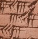

Jesús Cabrera (jccsvq)(*), 2025.
(*) At gmail.com
MesoMath is a Python3 package intended for the arithmetic of natural sexagesimal numbers, mainly in their "floating" aspect (i.e., by removing all possible trailing sexagesimal zeros from the right), as performed by the Babylonian scribes and their apprentices in ancient times.
Inpired by the arithmetic part of Baptiste Mélès' MesoCalc, it aims to bring this type of calculation to Python programming and to the command line as an efficient and versalite calculator.
You can obtain the software from its GitHub repository. Click on the <>Code button and choose Download ZIP. Unzip the downloaded archive to any directory of your choice (hereinafter referred to as the installation directory) and cd to it, that's all.
Obviously, a more or less modern version of Python 3 must be installed on your system; other than that, nothing else, since MesoMath only uses Python standard modules: math, itertools, argparse, os.path, and sqlite3.
None is required for casual use, simply work from the installation directory. So, if you decide to do without the application, you just have to delete that directory to get rid of all this stuff. To test the installation, open a terminal on the installation directory and run:
$ python3 test-babn.py
If all goes well and you don't encounter any error messages, you should get output similar to that shown in Appendix A (That output can be useful later as a cheat sheet for the calculator.).
Now that everything is hopefully up and working, is time to launch MesoMath as a calculator. To do this, we will open an interactive Python or iPython session (if you have it installed):
$ python3
Python 3.11.2 (main, Apr 28 2025, 14:11:48) [GCC 12.2.0] on linux
Type "help", "copyright", "credits" or "license" for more information.
>>>
At the python prompt >>> we will enter:
>>> from mesomath.babn import BabN as bn
>>>
Python silently returns the prompt, a sign that everything went well. What we've done is tell the interpreter to load the BabN class contained in the babn submodule of mesomath under the name bn (a faster abbreviation for BabN). We are about to introduce "Babylonian numbers" as objects of the bn class.
For iPython:
$ ipython3
Python 3.11.2 (main, Apr 28 2025, 14:11:48) [GCC 12.2.0]
Type 'copyright', 'credits' or 'license' for more information
IPython 8.5.0 -- An enhanced Interactive Python. Type '?' for help.
In [1]:
let us enter:
In [1]: from mesomath.babn import BabN as bn
In [2]:
The above is sufficient to work from the installation directory. To work from other directories, we must ensure that Python finds the mesomath module. This issue can be somewhat complicated, but one solution is the following:
Create a text file called something like initmm.py that contains at least the first three lines of the following:
import sys
sys.path.append("/home/jesus/Nextcloud/MesoMath")
from mesomath.babn import BabN as bn
message='''\nWelcome to Babylonian Calculator
...the calculator that every scribe should have!
\nUse: bn(number) to enter "Babylonian numbers"\n'''
print(message)
Of course, you must change: /home/jesus/Nextcloud/MesoMath/ to the path corresponding to your installation!
Copy the file to the directory you will be working in and launch:
$ python3 -i initmm.py
Welcome to Babylonian Calculator
...the calculator that every scribe should have!
Use: bn(number) to enter "Babylonian numbers"
>>>
or
$ ipython3 -i --no-banner initmm.py
Welcome to Babylonian Calculator
...the calculator that every scribe should have!
Use: bn(number) to enter "Babylonian numbers"
In [1]:
The above is sufficient if you are going to limit yourself to sexagesimal calculations, but if you are also going to tinker with the metrological aspects of scribal mathematics you should use an initmm.py file like:
import sys
sys.path.append("/home/jesus/Nextcloud/MesoMath")
from mesomath.babn import BabN as bn
from mesomath.npvs import Blen as bl
from mesomath.npvs import Bsur as bs
from mesomath.npvs import Bvol as bv
from mesomath.npvs import Bcap as bc
from mesomath.npvs import Bwei as bw
from mesomath.npvs import BsyG as bG
from mesomath.npvs import BsyS as bS
message='''Welcome to Babylonian Calculator
...the calculator that every scribe should have!
Use: bn(number), metrological classes: bl, bs, bv, bc, bw bG and bS loaded.'''
print(message)
For a more permanent installation, you could create scripts for your operating system. For example, on Linux, a file called babcalc with the following contents:
#!/usr/bin/env -S PYTHONPATH=/home/jesus/Nextcloud/MesoMath/ python3 -i -c 'from mesomath.babn import BabN as bn; print("\nWelcome to Babylonian Calculator\n ...the calculator that every scribe should have!\nUse: bn(number)\n")'
Of course, you must change: /home/jesus/Nextcloud/MesoMath/ to the path corresponding to your installation!
You can use ipython3 instead.
This file, once made executable and moved to any folder in the PATH, is very convenient. From any directory:
$ babcalc
Welcome to Babylonian Calculator
...the calculator that every scribe should have!
Use: bn(number)
>>>
In fact, during the development of this package an executable script like the following is being used:
#!/usr/bin/env -S python3 -i
import sys
sys.path.append("/home/jesus/Nextcloud/MesoMath")
from mesomath.babn import BabN as bn
from mesomath.npvs import Blen as bl
from mesomath.npvs import Bsur as bs
from mesomath.npvs import Bvol as bv
from mesomath.npvs import Bcap as bc
from mesomath.npvs import Bwei as bw
from mesomath.npvs import BsyG as bG
from mesomath.npvs import BsyS as bS
message='''\nWelcome to Babylonian Calculator
...the calculator that every scribe should have!
Use: bn(number), metrological classes: bl, bs, bv, bc, bw bG and bS loaded.
'''
print(message)
In what follows, the reader is assumed to be familiar with the key topics of Mesopotamian mathematics, in particular with the concepts of decimal and sexagesimal notations, absolute and floating numbers and with the concepts of regular and reciprocal numbers.
Let us create our first Babylonian number
>>> a = bn(405)
>>>
bn(405) creates it and it is asigned to variable a. Let us explore some of its properties:
>>> a.dec
405
>>> a.list
[6, 45]
>>> a.factors
(0, 4, 1, 1)
>>> a
6:45
>>> a.isreg
True
a.dec This is the decimal expansion of the number, we have used it for its creation abovea.listThis is the list of sexagesimal digits of the numbera.factors This is the list of factors/divisors of the number (see bellow)a or print(a) give us the printable representation of the number 6:45a.isreg This tells us that it is a "regular" numberWe can obtain all this information together using:
>>> a.explain()
| Sexagesimal number: [6, 45] is the decimal number: 405.
| It may be written as 2^0 * 3^4 * 5^1 * 1),
| so, it is a regular number with reciprocal: 8:53:20
>>>
while for a non-regular number:
>>> b=bn(7)
>>> b.isreg
False
>>> b.explain()
| Sexagesimal number: [7] is the decimal number: 7.
| It may be written as 2^0 * 3^0 * 5^0 * 7),
| so, it is NOT a regular number and has NO reciprocal.
| but an approximate inverse is: 8:34:17:9
| and a close regular is: 6:59:54:14:24
| whose reciprocal is: 8:34:24:11:51:6:40
>>>
Any natural number n can be writen as n = 2^i × 3^j × 5^k × l where i, j, k, l ≥ 0, i, j, k are the powers of 2, 3 and 5, and l is a "remainder" that should not be divisible by 2, 3 or 5. The tuple (i,j,k,l) is what
a.factorsreturned above.
We can introduce bab numbers in four ways:
a=bn(405)a=bn([6,45])a=bn('6:45') or a=bn("6.45")a=bn((0,4,1,1))so we have:
>>> b = bn([6,45])
>>> c = bn('6:45')
>>> d = bn((0,4,1,1))
>>> a == b == c == d
True
>>>
The printable or string representation of numbers uses colon `:``as separator by default.
>>> n1=bn(314159265)
>>> n1
24:14:26:27:45
>>>
You can change this default to your liking:
>>> bn.sep = '.'
>>> n1
24.14.26.27.45
>>> bn.sep = '-'
>>> n1
24-14-26-27-45
>>> bn.sep = '<>'
>>> n1
24<>14<>26<>27<>45
>>>
but you can only use : and . for input:
>>> m = bn('3:14:16')
>>> m1 = bn('3.14.16')
>>> print(m,m1)
3:14:16 3:14:16
>>>
We use the addition operator + to perform addition:
>>> a = bn('16.24.35')
>>> b = bn('1.33.54.22')
>>> a+b
1:50:18:57
>>>
addition is always absolute:
>>> a = bn('15.42.37.0.0')
>>> b = bn('24.34.0.0.0')
>>> c = a + b
>>> c
40:16:37:0:0
>>>
At any time, if we want the floating version of a number, we will use the .float() method or its synonym .f()
>>> c.float()
40:16:37
>>> c.f()
40:16:37
>>>
no need to use variables:
>>> bn(45689) + bn(325874)
1:43:12:43
and finally, integers can be added directly:
>>> bn('33.14.22') + 34
33:14:56
>>> 5523 + bn('33.14.22')
34:46:25
>>>
Of course, we are not limited to two addends:
>>> a + b + bn('33.14.22') + 34
40:17:10:14:56
>>>
Subtraction, like addition, always gives absolute (not floating) results. It also returns the absolute difference of numbers. This is by design, because Mesopotamian mathematics lacked negative numbers and to save us from mistakes. Thus, subtraction in this application is a commutative operation.
>>> bn(45689) - bn(325874)
1:17:49:45
>>> bn(325874) - bn(45689)
1:17:49:45
>>>
Multiplication is absolute by default:
>>> a = bn('34:59:31:12')
>>> b = bn('14:3:45')
>>> a*b
8:12:4:30:0:0:0
if we want a floating result:
>>> (a*b).f()
8:12:4:30
or we can change the default
>>> bn.floatmult = True
>>> a*b
8:12:4:30
>>>
and restore it again:
>>> bn.floatmult = False
>>> a*b
8:12:4:30:0:0:0
>>>
Use the ** operator:
>>> a
34:59:31:12
>>> a**2
20:24:26:24:13:49:26:24
>>> a**3
11:54:5:36:24:11:24:33:52:7:40:48
>>>
This application offers two types of division, both are floating:
a/b Approximate floating division of two arbitrary numbers. This is the translation of our modern division into the world of Babylonian floating numbers, although we have no evidence that they knew it.a//b This is the "Babylonian Division", that is, the product of a by the reciprocal of b, which implies that b has to be regular.Let us try:
>>> a = bn('14.15.16')
>>> b = bn('12.2')
>>> q = a/b
>>> q
1:11:4:29:15:7:29
now, as a check:
>>> b*q
14:15:16:0:0:0:2:58
>>>
a value that, in the world of floating numbers, is very similar to a.
We can change the number of digits in the result (approximately, sorry):
>>> bn.rdigits = 10
>>> a/b
1:11:4:29:15:7:28:45:12:29:52
>>>
>>> a//b
Divisor is not a regular number!
>>> b = bn(405)
>>> b
6:45
>>> b.isreg
True # b is regular
>>> c = b.rec() # c is the reciprocal of b
>>> a//b
2:6:42:22:13:20
>>> a * c
2:6:42:22:13:20
>>> c
8:53:20
>>>
Method .sqrt() returns the floating square root of the numbers.
>>> bn.rdigits = 6
>>> bn(2).sqrt()
1:24:51:10:7:46
>>>
Let us check it:
>>> bn(2).sqrt() ** 2
1:59:59:59:59:59:42:48:20:19:16
>>>
Let us round it to 6 digits:
>>> (bn(2).sqrt() ** 2).round(6)
2:0:0:0:0:0
>>>
and floating it:
>>> (bn(2).sqrt() ** 2).round(6).f()
2
>>>
We see that effectively 1:24:51:10:7:46 is an approximation of the square root of 2. To relate this sexagesimal floating value to the square root of two in the decimal system, let's calculate:
>>> (bn(2).sqrt()).dec/60.**5
1.4142135622427983
>>>
which is similar to:
>>> from math import sqrt
>>> sqrt(2)
1.4142135623730951
>>>
Compare the following result:
>>> (30*bn(2).sqrt()).float()
42:25:35
>>>
to the one appearing in tablet YBC 7289
Method .cbrt() returns the floating cube root of the numbers.
>>> bn(2).cbrt()
1:15:35:43
>>> bn(2).cbrt() ** 3
2:0:0:0:15:12:26:47:50:7
>>>
etc.
The Python engine is behind the scenes, which means we can combine elementary operations to build complex expressions:
>>> a = bn('16.22')
>>> b = bn('44.16')
>>> c = bn('6.45')
>>> d = ((a+b)*(a-b))//c**2
>>> d
37:7:42:48:53:20
>>>
use lists:
>>> ll=[a,b,c,d]
>>> ll
[16:22, 44:16, 6:45, 37:7:42:48:53:20]
>>> min(ll)
6:45
>>> max(ll)
37:7:42:48:53:20
>>>
etc.
Logical operators are available and can be combined with integers. This can be useful in programming.
>>> a <= b and c.isreg
True
>>> a < 300
False
bn.fill is set to False by default. You can change it to modify the aspect of the printed sexagesimal numbers by adding a left 0 to digits from 0 to 9 i.e. to conver them to 00, 01, ..., 09:
>>> z = bn('1.2.0.14.5.4.3')
>>> z
1:2:0:14:5:4:3
>>> bn.fill = True
>>> z
01:02:00:14:05:04:03
>>> bn.fill = False
>>> z
1:2:0:14:5:4:3
>>>
Still to be documented. In the meantime, you can consult Appendix B for help on the BabB class (called bn in this tutorial because we used: from mesomath.babn import BabN as bn).
This method returns the reciprocal of regular numbers, None for non-regular numbers:
>>> a=bn(400)
>>> a
6:40
>>> a.rec()
9
>>> a * a.rec()
1:0:0
>>> b=bn(406)
>>> b
6:46
>>> b.rec()
Not regular!
>>> x = b.rec()
Not regular!
>>> x
>>> type(x)
<class 'NoneType'>
This is a replacement for .rec() for irregular numbers. Irregular numbers can be said to have infinite-digit reciprocals; this method calculates the first n of them.
>>> b=bn(406)
>>> b
6:46
>>> b.isreg
False
>>> c=b.inv()
>>> c
8:52:1:11
>>> b * c
1:0:0:0:0:26
>>> c=b.inv(10)
>>> c
8:52:1:10:56:9:27:29:15:44
>>> b * c
1:0:0:0:0:0:0:0:0:0:27:44
>>>
Returns the first n sexagesimal digits of the number with rounding:
>>> c
8:52:1:10:56:9:27:29:15:44
>>> c.round(4)
8:52:1:11
>>>
Useful when working with approximate floating numbers.
Returns the first n sexagesimal digits of the number without rounding:
8:52:1:10:56:9:27:29:15:44
>>> c.round(4)
8:52:1:11
>>> c.head() # Without argument, returns the first digit only.
8
>>> c.head(3)
8:52:1
>>> c.head(7)
8:52:1:10:56:9:27
>>>
You will find this method and the next one used in the example-melville.py file in your installation directory.
Returns the last n sexagesimal digits of the number:
>>> c
8:52:1:10:56:9:27:29:15:44
>>> c.tail() # Without argument, returns the last digit only.
44
>>> c.tail(2)
15:44
>>> c.tail(6)
56:9:27:29:15:44
>>>
This was not intended for interactive use.
Searches the bn.database database for the closest regular number to the object's.
minn and maxn: must be sexagesimal strings using ":" separator. limdigits max value is 20.
>>> c
8:52:1:10:56:9:27:29:15:44
>>> c.searchreg('01', '59')
8:51:26:27:36
>>> c.searchreg('01', '59', 7)
8:51:26:27:36
>>> c.searchreg('01', '59', 9)
8:51:26:27:36
>>> c.searchreg('01', '59', 19)
8:52:2:27:52:35:29:35:23:26:15
>>> bn(7).searchreg('06:40', '07:40', 4, True)
72000 06:40
54000 06:45
37440 06:49:36
35775 06:50:03:45
19008 06:54:43:12
12000 06:56:40
6750 07:01:52:30
24000 07:06:40
43200 07:12
50500 07:14:01:40
60864 07:16:54:24
62640 07:17:24
82323 07:22:52:03
88000 07:24:26:40
108000 07:30
126400 07:35:06:40
128250 07:35:37:30
Minimal distance: 6750, closest regular is: 07:01:52:30
7:1:52:30
>>>
You can use the metrological classes bl, bs, bv, bc, bw, bG, and bS
class bl: Babylonian length system (susi, kus, ninda, us, danna)
class bs: Babylonian surface system (se, gin, sar, gan)
class bv: Babylonian volume system (se, gin, sar, gan)
class bc: Babylonian capacity system (se, gin, sila, ban, bariga, gur)
class bw: Babylonian weight system (se, gin, mana, gu)
class bG: Babylonian System G (iku, ese, bur, bur_u, sar, sar_u, sar_gal)
class bS: Babylonian System S (dis, u, ges, gesu, sar, sar_u, sar_gal)
in a similar way to what we saw for sexagesimal numbers with the bn class. We can introduce measurements in two different ways:
>>> a = bl(11111)
>>> a
30 ninda 10 kus 11 susi
>>> b = bl('5 ninda 25 susi')
>>> b
5 ninda 25 susi
In the first case, a is defined as a certain (integer) number of times the smallest unit ("susi" in the case of lengths). In the second case, we define the value for b textually. Note that we can only use integer values in both cases. Both input methods are available for all classes.
Once you have defined measurements, you can "explain" them:
>>> a.explain()
This is a Babylonian length meassurement: 30 ninda 10 kus 11 susi
Unit names: ['susi', 'kus', 'ninda', 'us', 'danna']
Factor between units: [30, 12, 60, 30]
Factor with the smallest unit (susi): [1, 30, 360, 21600, 648000]
Meassurement in terms of the smallest unit: 11111 (susi)
Sexagesimal floating value of the above: 3:5:11
Approximate SI value: 185.18333333333334 meters
>>>
>>> b.explain()
This is a Babylonian length meassurement: 5 ninda 25 susi
Unit names: ['susi', 'kus', 'ninda', 'us', 'danna']
Factor between units: [30, 12, 60, 30]
Factor with the smallest unit (susi): [1, 30, 360, 21600, 648000]
Meassurement in terms of the smallest unit: 1825 (susi)
Sexagesimal floating value of the above: 30:25
Approximate SI value: 30.416666666666668 meters
>>>
That will give us information about the nature of the measurement and the properties of the measurement system being used.
Note that the value given as "Sexagesimal floating value of the above:" is generated by the .sex() method; however, this method accepts a numeric parameter to indicate the unit relative to which this sexagesimal floating value is calculated. This parameter defaults to zero, indicating the first unit in the list provided by .explain(): Unit names: ['susi', 'kus', 'ninda', 'us', 'danna']
>>> a.sex() # susi as the base unit
3:5:11
>>> a.sex(0) # the same as .sex()
3:5:11
>>> a.sex(1) # kus as the base unit
6:10:22
>>> a.sex(2) # ninda as the base unit
30:51:50
>>> a.sex(3) # us as the base unit
30:51:50
>>> a.sex(4) # danna as the base unit
1:1:43:40
>>>
This will be useful if you intend to recreate Metrological lists (Although, at the moment, the application does not contemplate the entry or display of data using principal fractions 1/3, 1/2, 2/3 and 5/6 used by scribes). For example, code:
from mesomath.npvs import Blen as bl
ls =[]
for i in range(1,10):
ls.append(str(i)+' susi')
for i in '10 15 20 25'.split():
ls.append(i+' susi')
ls.append('1 kus')
for i in '10 15 20 25'.split():
ls.append('1 kus '+i+' susi')
ls.append('2 kus')
for i in ls:
x=bl(i)
print(f'{str(x).ljust(15)} -> {str(x.sex(2)).rjust(6)}')
will print this excerpt of the metrological table for length using ninda (x.sex(2)) as base unit:
1 susi -> 10
2 susi -> 20
3 susi -> 30
4 susi -> 40
5 susi -> 50
6 susi -> 1
7 susi -> 1:10
8 susi -> 1:20
9 susi -> 1:30
10 susi -> 1:40
15 susi -> 2:30
20 susi -> 3:20
25 susi -> 4:10
1 kus -> 5
1 kus 10 susi -> 6:40
1 kus 15 susi -> 7:30
1 kus 20 susi -> 8:20
1 kus 25 susi -> 9:10
2 kus -> 10
(See page 8 of Floating calculation in Mesopotamia by Christine Proust).
For objects of the same class, the following operations are available:
Let us see a few example:
>>> a >= b
True
>>> a+b
35 ninda 11 kus 6 susi
>>> a-b
25 ninda 9 kus 16 susi
>>> b-a # a-b == b-a !!!
>>> a-b == b-a
True
25 ninda 9 kus 16 susi
>>> 2*a
1 us 1 ninda 8 kus 22 susi
>>> b*2
10 ninda 1 kus 20 susi
>>> b*2.5
12 ninda 8 kus 2 susi
>>> a/2
15 ninda 5 kus 6 susi
>>> (a+2*b)/5
8 ninda 2 kus 12 susi
>>> (a+2*b)/5.3
7 ninda 8 kus 25 susi
>>>
Additionally, for length measurements we can multiply them together to obtain surfaces and volumes, and for surfaces we can multiply them by lengths to obtain volumes:
>>> c = bl('2 kus')
>>> c
2 kus
>>> s=a*b
>>> s
1 gan 56 sar 27 gin 138 se
>>> s.explain()
This is a Babylonian surface meassurement: 1 gan 56 sar 27 gin 138 se
Unit names: ['se', 'gin', 'sar', 'gan']
Factor between units: [180, 60, 100]
Factor with the smallest unit (se): [1, 180, 10800, 1080000]
Meassurement in terms of the smallest unit: 1689798 (se)
Sexagesimal floating value of the above: 7:49:23:18
Approximate SI value: 5632.66 square meters
>>> v=s*c
>>> v
3 gan 12 sar 55 gin 96 se
>>> v.explain()
This is a Babylonian volume meassurement: 3 gan 12 sar 55 gin 96 se
Unit names: ['se', 'gin', 'sar', 'gan']
Factor between units: [180, 60, 100]
Factor with the smallest unit (se): [1, 180, 10800, 1080000]
Meassurement in terms of the smallest unit: 3379596 (se)
Sexagesimal floating value of the above: 15:38:46:36
Approximate SI value: 5632.66 cube meters
>>> v2=a*b*c
>>> v2 == v
True
>>>
Finally, in cases like this:
>>> s2=bs('72 gan 4 gin 172 se')
>>> s2
72 gan 4 gin 172 se
>>>
We might prefer to view the coefficients as sexagesimal numbers; to do this:
>>> bs.prtsex=True
>>> s2
1:12 gan 4 gin 2:52 se
>>>
This changes the default for objects of the bs class. If you want this to be the default for all classes, add:
from mesomath.npvs import MesoM
MesoM.prtsex = True
to your initmm.py file or initiation script.
test-babn.pyOpen a terminal on the installation directory and issue:
$ python3 test-babn.py
You should get a long listing free of errors similar to the following (some differences are allowed)
Output:
Some basic tests of BabN class follow:
A couple of BabN numbers: a: 1:12:23 and b: 6:45
Are they regular? a: False, b: True
Factors a: (0, 0, 0, 4343), b: (0, 4, 1, 1)
Otherwise:
a.explain()
| Sexagesimal number: [1, 12, 23] is the decimal number: 4343.
| It may be written as 2^0 * 3^0 * 5^0 * 4343),
| so, it is NOT a regular number and has NO reciprocal.
| but an approximate inverse is: 49:44:6:45
| and a close regular is: 1:12:20:16:40
| whose reciprocal is: 49:45:59:2:24
b.explain()
| Sexagesimal number: [6, 45] is the decimal number: 405.
| It may be written as 2^0 * 3^4 * 5^1 * 1),
| so, it is a regular number with reciprocal: 8:53:20
Basic operations with them:
a + b = 1:19:8
a - b = 1:5:38
a * b = 8:8:35:15
a**2 = 1:27:19:20:49
a**4 = 2:7:5:12:36:24:15:20:1
Product result is not floating by default:
BabN("12.13.0.0")*BabN("1.23.45.0.0.0") = 17:3:8:45:0:0:0:0:0
but you can change this by issuing: BabN.floatmult = True
then:
BabN("12.13.0.0")*BabN("1.23.45.0.0.0") = 17:3:8:45
...(restoring default to BabN.floatmult = False)
Basic operations with positive integers:
111 + b = 8:36
a - b = 1:5:38
a / 43 = 1:41
3 * BabN(20) = 1:0
Comparisons:
a > b = True
a <= b = False
not a <= b = True
a == a = True
a != a - 1 = True
Comparisons with positive integers:
a > 100 = True
500 <= b = False
not a <= 47 = True
Approximate inverse of a is: 49:44:6:45
Testing: a*a.inv() = 1:0:0:0:0:35:15
Now using a.inv(8) we have: 49:44:6:44:30:46:50:2
Testing: a*a.inv(8) = 59:59:59:59:59:59:59:59:34:46
b/a = 5:35:42:45:30:28
(b/a).len() = 6
For regular number b: 6:45
Reciprocal of b: 8:53:20
Inverse of b: 8:53:20
Babylonian division a//b = 10:43:24:26:40
From now on, BabN.sep is ".", as in MesoCalc (http://baptiste.meles.free.fr/site/mesocalc.html)
a//b = 10.43.24.26.40
Other operations:
BabN(3)*(a+b)**2 // b = 46.23.8.55.6.40
but you can mix operations with int's
3*(a+b)**2 // b = 46.23.8.55.6.40
BabN(2).sqrt() = 1.24.51.10.7.46, BabN(2).sqrt()**2 = 1.59.59.59.59.59.42.48.20.19.16
Let us round it: (BabN(2).sqrt()**2).round(6) = 2.0.0.0.0.0
or: ((BabN(2).sqrt()**2).round(6)).f() = 2
.f() is a synonym for .float() !
(BabN(2).sqrt()).dec/60.**5 = 1.4142135622427983
Compare to sqrt(2) = 1.4142135623730951
From now on, BabN.rdigits is: 4
(30*BabN(2).sqrt()).float() = 42.25.35
Compare to YBC 7289 (https://en.wikipedia.org/wiki/YBC_7289)
BabN(2).cbrt() = 1.15.35.43, BabN(2).cbrt()**3 = 2.0.0.0.15.12.26.47.50.7
Database search for close regulars:
a.searchreg('01:10','01:20',5,1)
447300 01:10:18:45
274800 01:11:06:40
82800 01:12
9800 01:12:20:16:40
93840 01:12:49:04
111600 01:12:54
290448 01:13:43:40:48
308430 01:13:48:40:30
365200 01:14:04:26:40
565200 01:15
749200 01:15:51:06:40
767700 01:15:56:15
954000 01:16:48
1142416 01:17:40:20:16
1161360 01:17:45:36
1240200 01:18:07:30
1371312 01:18:43:55:12
1645200 01:20
Minimal distance: 9800, closest regular is: 01:12:20:16:40
its reciprocal is: 49.45.59.2.24, compare to a.inv(): 49.44.6.45
NAME
babn
CLASSES
builtins.object
BabN
class BabN(builtins.object)
| BabN(n)
|
| This class implements a sexagesimal representation of the natural numbers
| and their basic arithmetic operations, especially in their "floating" version,
| as performed by Babylonian scribes. Hence the name.
|
| Class attributes:
| | sep: separator for string representation (default: ":")
| | fill: if True writes: "01.33.07" instead of "1.33.7" (default: False)
| | rdigits: approximate number of sexagesimal digits for some results (default: 6:)
| | floatmult: If True, multiplication result is floating
| | database: path to SQLite3 database of regular numbers providing:
| | | regular TEXT, regular number e.g. 01:18:43:55:12
| | | len INTEGER, its length e.g. 5 for 01:18:43:55:12
| | see `createDB.py` or `hamming.py` for how to generate it
|
| Instance attributes:
| | dec: decimal versión of number (ex: 405 for sexagesimal "6:45")
| | list: list of sexagesimal digits of number (ex: [6, 45] for 405 or "6:45")
| | isreg: True if number is regular (only contains 2, 3, 5 as divisors)
| | factors: tuple with the powers of 2, 3, 5 and the remainder
|
| jccsvq fecit, 2005. Public domain.
|
| Methods defined here:
|
| __add__(self, other)
| Overloads `+` operator: returns BabN object with the sum of operands
|
| __eq__(self, other)
| Overloads == operator
|
| __floordiv__(self, other)
| Overloads `//` operator: Returns BabN object with the result of
| "Babylonian división" of operands, i.e., if b is regular then a//b
| returns a times the reciprocal of b. Result is floating. Returns None
| if b is not regular.
|
| __ge__(self, other)
| Overloads >= operator
|
| __gt__(self, other)
| Overloads > operator
|
| __init__(self, n)
| Class constructor
| | n: The parameter n can be an integer (sign is ignored) or a properly
| formatted string representing a sexagesimal number, accepting the
| separators ":" and "." (e.g., 405, "02:45" or "2.45") or a list
| (e.g., [1, 12, 23]) or a tuple (e.g., (i,j,k,l) such that
| 2**i * 3**j * 5**k * l is the decimal value of the number.
|
| __le__(self, other)
| Overloads <= operator
|
| __lt__(self, other)
| Overloads < operator
|
| __mul__(self, other)
| Overloads `*` operator: returns BabN object with the operands product
|
| __ne__(self, other)
| Overloads != operator
|
| __pow__(self, x)
| Overloads `**` operator: Returns BabN object with the number raised
| to the power x where x is a natural integer
|
| __radd__(self, other)
| Overloads `+` operator: returns BabN object with the sum of operands
|
| __repr__(self)
| Returns string representation of sexagesimal number.
|
| __rfloordiv__(self, other)
| Overloads `//` operator: Returns BabN object with the result of
| "Babylonian división" of operands, i.e., if b is regular then a//b
| returns a times the reciprocal of b. Returns None if b is not regular.
|
| __rmul__(self, other)
| Overloads `-` operator: returns BabN object with the operands product
|
| __rsub__(self, other)
| Overloads `-` operator: returns BabN object with the absolute value
| of the operands difference
|
| __rtruediv__(self, other)
| Overloads `/` operator: Returns BabN object with the floating
| approximate division of operands
|
| __sub__(self, other)
| Overloads `-` operator: returns BabN object with the absolute value
| of the operands difference
|
| __truediv__(self, other)
| Overloads `/` operator: Returns BabN object with the floating
| approximate division of operands
|
| cbrt(self)
| Returns BabN object with approximate floating cube root
|
| dec2list(n)
| Convert decimal integer n to list of int's (its sexagesimal digits)
|
| dist(self, n)
| Estimates a certain "distance" between two sexagesimal numbers.
|
| The objective is, given a non-regular number, to select the regular
| number that is closest to it from a list.
| | n: may be an integer, formated string (ex: "1:2:3"), a list
| (ex., [1, 12, 23]) or another BabN object. Returns int.
|
| explain(self)
| Explains number; print out basic information about the object.
|
| f(self)
| Returns BabN object with the floating part of the number (mantissa),
| i.e., removes any trailing sexagesimal zero, ex.: 4:42:0:0 -> 4:42
|
| float = f(self)
|
| genDB(dbname)
| Generates sqlite3 database of regular numbers
| | dbname: database path and name
|
| head(self, d=1)
| Returns BabN object with the first d digits of self
|
| inv(self, digits=4)
| Returns BabN object with approximate inverse of the number,
| i.e., a * a.inv() is approximately a power of 60
|
| len(self)
| Returns the number of sexagesimal digits of the number as int
|
| parse(n)
| Returns tuple with decimal value and list of sexagesimal digits of n.
| | n: may be
| | an integer (sign is ignored),
| | a correctly formated string (e.g., 405, "02:45" or "2.45"),
| | a list (e.g., [1, 12, 23])
| | a tuple (e.g., (i,j,k,l) such that 2**i * 3**j * 5**k * l is the
| | decimal value of the number
|
| rec(self)
| Returns BabN object with the reciprocal of a regular number, returns
| None for non-regular numbers
|
| round(self, d)
| Returns d BabN object rounded to d sexagesimal digits
|
| searchreg(self, minn, maxn, limdigits=6, prt=False)
| Search database for regulars between sexagesimals minn y maxn.
| Returns BabN object with the closest regular found.
|
| | minn and maxn: must be sexagesimal strings using ":" separator
| | limdigits: max regular digits number (default: 6)
| | prt: print list of regulars found (default: False)
|
| Returns the closest regular as a BabN object
|
| sqrt(self)
| Returns BabN object with approximate floating square root
|
| tail(self, d=1)
| Returns BabN object with the last d digits of self
|
| trim(self, d)
| Returns d BabN object corresponding to the first d sexagesimal digits
|
| ----------------------------------------------------------------------
| Data descriptors defined here:
|
| __dict__
| dictionary for instance variables (if defined)
|
| __weakref__
| list of weak references to the object (if defined)
|
| ----------------------------------------------------------------------
| Data and other attributes defined here:
|
| __hash__ = None
|
| database = 'regular.db3'
|
| fill = False
|
| floatmult = False
|
| rdigits = 6
|
| sep = ':'
FUNCTIONS
connect(...)
Opens a connection to the SQLite database file database.
You can use ":memory:" to open a database connection to a database that resides
in RAM instead of on disk.
log(...)
log(x, [base=math.e])
Return the logarithm of x to the given base.
If the base not specified, returns the natural logarithm (base e) of x.
sqrt(x, /)
Return the square root of x.
FILE
/home/jesus/Nextcloud/MesoMath/mesomath/babn.py